I set myself a goal in 2019: read, on average, a book per week. I achieved that goal, and then some. I was able to do it by deleting my social media feeds. Below is the list, in the order I read them, with some small thoughts on each book.
One rule: I did not have to finish a book I wasn't enjoying. All of these passed that test, so consider my review for all of these a thumbs-up. A couple didn't pass this test, and I won't bother you with those.
Hopefully no spoilers below.
Riddance: Or: The Sybil Joines Vocational School for Ghost Speakers & Hearing-Mouth Children
By Shelley Jackson
What can you say about a story set partially in the land of the dead and partially in an early 20th Century school for children with speech impediments. This is one weird-ass book. The photos and other artifacts of the ghost speakers, make it more than just a novel. Not an easy thing to read, but ultimately it pays off if you stick with it. (512 pages)
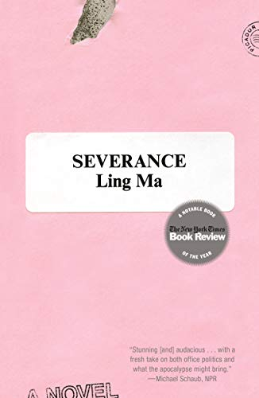
Severance
By Ling Ma
Well, we won't have to worry about global warming since most folks will be killed by a worldwide pandemic. If you want a picture of what happens to New York City when most of its inhabitants are dead or dying, this is the novel for you. It was the novel for me anyway. (297 pages)
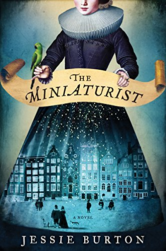
The Miniaturist
By Jessie Burton
If menacing dollhouses set in 17th Century Amsterdam are your cup of tea, you'll dig this one. Lots of period color, a mysterious maker of miniature whatnots, and dark and forbidden secrets. Based on an actual dollhouse. (419 pages)
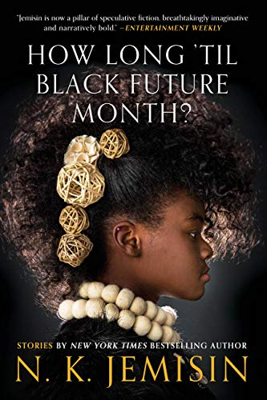
How Long Til Black Future Month?
By N.K. Jemisin
My introduciton to N.K. Jemisin was the "Broken Earth" series. Those books are so cool — fantasy without dragons and swords. This collection of short stories was written over more than a decade, and while I do think they feel a bit all over the board, the author's storytelling makes each enjoyable. (499 pages)
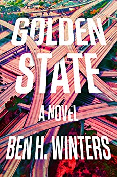
Golden State
By Ben Winters
You cannot tell a lie — unless you want to attract the attention of the cops. What is reality? What is truth? What lies outside what is left of Southern California? Turns out Las Vegas is still there. (337 pages)
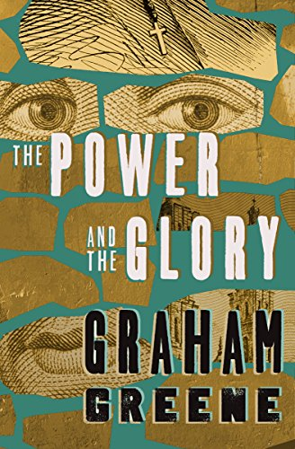
The Power and The Glory
By Graham Greene
In Mexico, where Catholicism has been outlawed and a war rages, one piss-poor priest attempts to avoid execution and meet his illegitimate child. I'm not sure who the hero is here, but it definitely doesn't appear to be the common folk. (90 pages)
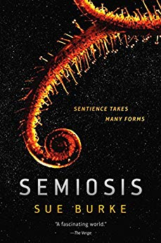
Semiosis
By Sue Burke
Eco-refugees have landed on what appears to be a friendly, verdant, beautiful planet well-suited to human life. What is really happening under the dirt? How do you communicate with a sentient being who doesn't use language as we know it? (326 pages)
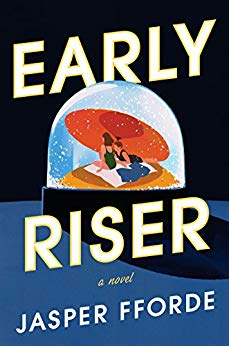
Early Riser
By Jasper Fforde
The United Kingdom is gripped by an Ice Age, so you gotta hibernate to survive the killing winter. Of course a giant corporation will be figuring out how to monetize that. (413 pages)
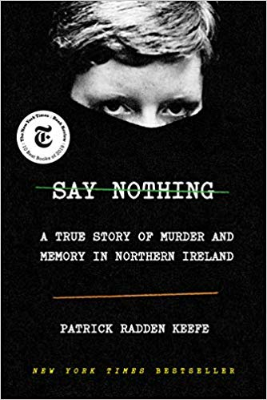
Say Nothing
By Patrick Radden Keefe
The Troubles in Northern Ireland have receded in memory, but the scars remain. A mother disappears under suspicious circumstances, a couple of sisters find themselves moving deeper into violence, and Gerry Adams is a class-A asshole. (464 pages)
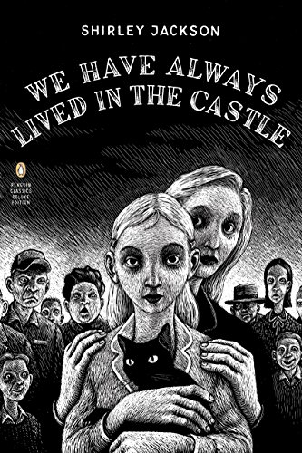
We Have Always Lived In The Castle
By Shirley Jackson
What a masterful suspense story. Slowly we learn the truth of why two sisters and their infirm uncle are hold up in an old house separated from the rest of the world. I was rooting for them to just be left alone — of course, that doesn't happen. (162 pages)
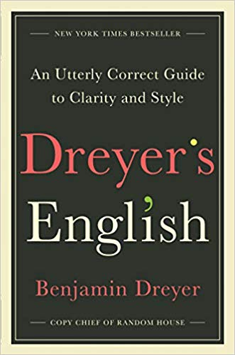
Dreyer’s English
By Benjamin Dreyer
This book begs the question, "why is the English langauge so fun?" Mr. Dryer incented me to think deeply about words, and while he could probably care less, I found myself bemused and delighted. (320 pages)
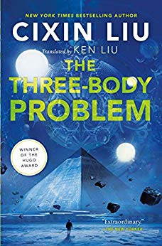
The Three Body Problem (Rememberance Of Earth's Past Book 1)
By Cixin Liu
The characters are like cardboard cutouts, but the story of Earth’s first encounter with an extraterrestrial civilization is thought-provoking, weird, and confusing. Things do not look good for our one-dimensional heroes. After reading this book, I was not going to continue the series, but I couldn't get the story out of my head. I read them all, and I'm glad I did. (400 pages)
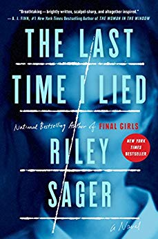
The Last Time I Lied
By Riley Sager
A summer camp tragedy leads to a mystery, a mystery that plagues a New York artist who paints on a repeated theme trying to understand and exercise the trauma. A return to the summer camp brings plenty of creepy chills. It would have worked too, if it wasn't for these meddlin' kids. (381 pages)

The Haunting of Hill House
By Shirley Jackson
Take a group of people, drop them into a haunted house, and let the good times roll. The scares feel real, and all we want is for our hero, Eleanor, to spread her wings and live a little. I bet we can all guess how that turns out. (265 pages)
My Brilliant Friend
By Elena Ferrante
Two young girls in a violent post-War Naples struggle to find their way in a world where little is expected of them. The novel was okay, but really sort of a soap opera. I feel like I was really supposed to be drawn in by this novel. While I didn't dislike it such that I stopped reading, it was not the joy I expected based on reputation. (331 pages)
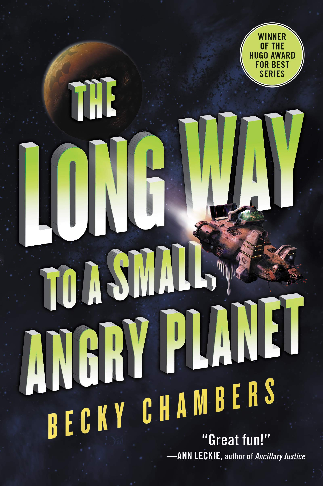
The Long Way To A Small, Angry Planet
By Becky Chambers
First of a trilogy, this has a Firefly feel to it. A ragtag crew of freelance wormhole builders learn to live, love, trust, and share their secrets. The best of the trilogy. (423 pages)
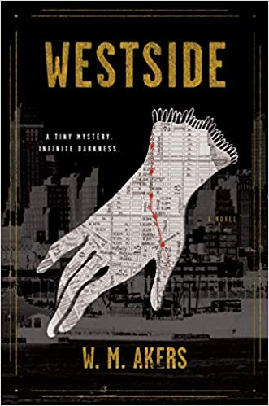
Westside
By W.M. Akers
19th Century Manhattan in the Upside Down. Gangs own the streets, anything mechanical falls to dust, guns don't shoot, houses disappear. Something is not right here. That this is primarily set in the part of the city I work in makes it even more fun for me. (304 pages)
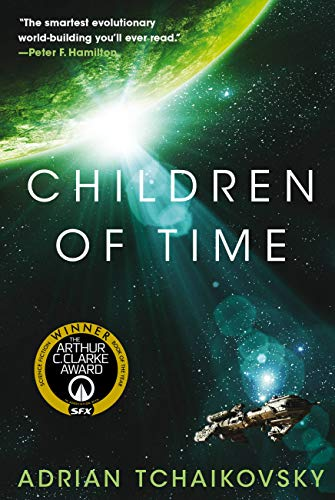
Children Of Time
By Adrian Tchaikovsky
Welp, humans have fucked it all up once again. Efforts to reach past the solar system and colonize new planets have resulted in the creation of a society of sentient spiders and other invertebrates. I found myself cheering on the spiders in the end. (640 pages)
Riots I Have Known
By Ryan Chapman
The editor of a prison creative writing magazine is trending on Twitter and tries to explain why he has done the things he's done. Meanwhile, the rioters are coming for him. The many digs at Brooklyn hipsters hit close to home. It's funny, though my description doesn't sound very comic. (128 pages)
The Logic of Sports Betting
By Ed Miller & Matthew Davidow
I know a bit about gambling, but sports betting has always been inscrutable. Since I have read Ed Miller's poker books in the past, I trust he knows his topic. I came away with a much better understanding of how this all works. But I'm still not planning to make my living as a sports bettor anytime soon. If you're curious about the mathematics of what "Bengals minus 6.5" means, you'll learn that from Ed. (237 pages)

The Mom Test
By Rob Fitzpatrick
How do you test a new product idea out and make sure you're getting feedback that is truly helpful? People really, really want to be nice and tell you what you want to hear. And you are probably telegraphing what you want to be told. (138 pages)
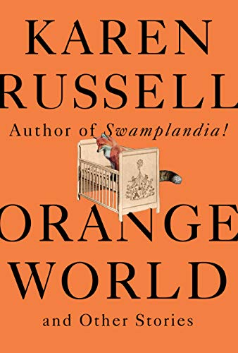
Orange World
By Karen Russell
Well, where to begin with this short story collection? I always jump a the chance to read Karen Russell's stories. They are just weird, and none is alike. For instance, one story is about an old time tornado wrangler looking to raise one last beauty, another is about a man who falls in love with a dead girl preserved by Welsh bog, in another a woman becomes a Joshua tree. They're so inventive — each one is a gem. (288 pages)

We Are Legion (We Are Bob)
By Dennis E. Taylor
Things are going great for Bob. That is, until he dies and awakens as a disembodied consiousness destined to control a self-replicating Von Neumann probe as it tours the galaxy looking for planets for humanity to occupy. (383 pages)
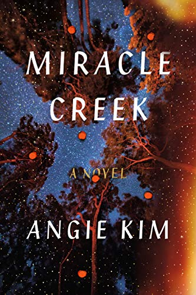
Miracle Creek
By Angie Kim
Weirdo hyperbaric chamber treatments, Munchausen by proxy, an explosion. It’s a murder mystery and a study in the desperate lengths people will go to for their children. (349 pages)
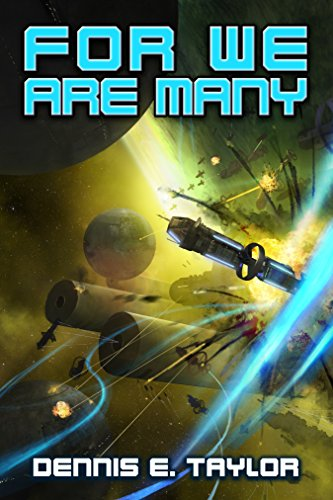
For We Are Many
By Dennis E. Taylor
More Bobs, more fun! The Earth is in deep trouble: a war and nuclear winter are making human life on Earth nearly impossible. The Bobs are multiplying as they look for safe worlds. Rival probes are a constant danger and, to top it all off, there's a very nasty species out there intent on consuming whatever they come across. Bob becomes a sky god. (321 pages)
All These Worlds
By Dennis E. Taylor
More Bobs are becoming a pain in the ass. Those nasty Others are still out there intent on consuming Earth. Can the Bobs save humanity? (282 pages)
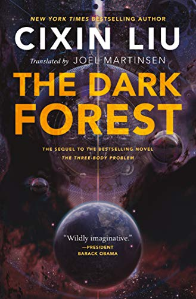
The Dark Forest (Remembrance Of Earth's Past Book 2)
By Cixin Liu
So, the aliens are coming, and things are looking bleak. Science things happen, and things aren’t as bleak — we’re gonna be okay! More science things, and we’re definitely not okay. (513 pages)
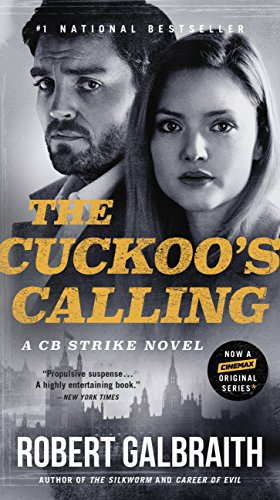
The Cuckoo’s Calling
By Robert Galbraith
Cormoran Strike is a one-legged former Army investigator and war hero turned civilian private detective. His practice is in rough shape until he finds his Robin and solves a high-profile murder mystery. (561 pages)
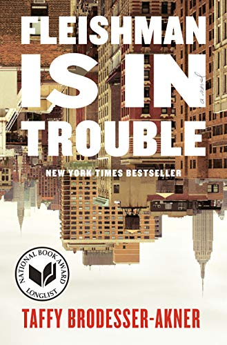
Fleishman Is In Trouble
By Taffy Brodesser-Akner
Toby Fleishman's relationship to his family is interesting, but I wanted more about the Fleishman who is really in trouble. Super New York-y. (376 pages)
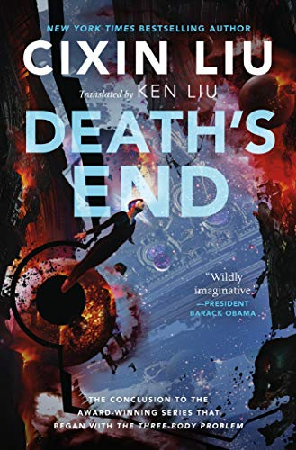
Death’s End (Remembrance Of Earth's Past Book 3
By Cixin Liu
We’re saved! Or, well, see, it’s not really saved so much as...um, everything gets very weird as we come to find out what our place in the universe is. The entire trilogy is around 1500 pages in length, and I would have come along for more. (605 pages)
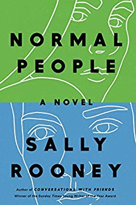
Normal People
By Sally Rooney
Not a whole lot happens for Marianne and Connell. But the way they revolve around each other and the way their social fortunes wax and wane is engaging and ultimately satisfying. (268 pages)
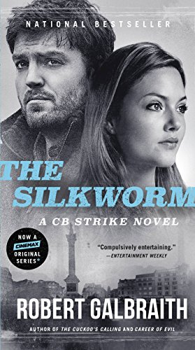
The Silkworm
By Robert Galbraith
Cormoran Strike and Robin are back with some ritual disembowelment in the petty world of book publishing. I feel like our author is channeling some frustrations. (465 pages)
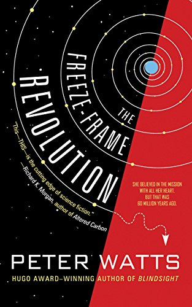
The Freeze Frame Revolution
By Peter Watts
It's not easy to stage a rebellion against an AI who knows all your movements and is looking out for your best interests. Also, your co-revolutionaries are rarely awake when you are. And you're not awake all that often. (192 pages)
Player Of Games
By Iain Banks
A really good board game player tries to overthrow a space empire. Is he a hero or a pawn in a greater game? There's also a cranky flying robot secret agent. One of Banks's Culture novels, but you don't need to have a deep background in the series to enjoy this one. (417 pages)

Where The Crawdads Sing
By Delia Owens
A murder mystery and the story of a feral orphan girl converge on two different timelines in 1950s and 60s North Carolina swamps. Owens builds a lot of empathy for our heroes. This one kept me guessing all the way to the end. (379 pages)
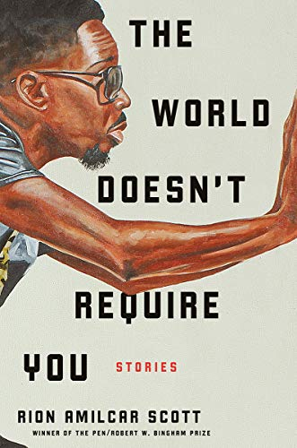
The World Doesn’t Require You
By Rion Amilcar Scott
This is a hard one. The stories in this collection revolved around a town in Maryland that was the site of the only (fictional) successful slave revolt in America. The intertwined stories are sometimes magical, sometimes religious and musical, sometimes elaborately violent. I'm not exactly sure what I read, but it was worth reading. This is a follow-up set of stories to a previous collection. (310 pages)
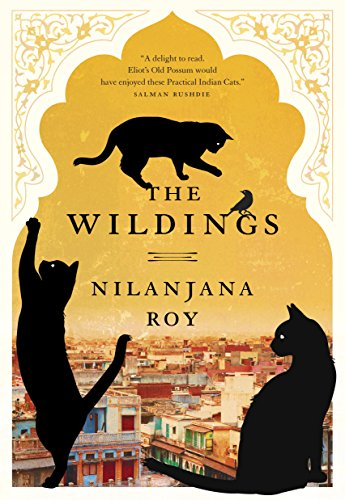
The Wildings
By Nilanjana Roy
Sentient cats in New Delhi! First in a YA series, though I think I'm done at this one. Cat lovers will nod and smile in recognition often. You will look a little differently at your cats for awhile afterward. (338 pages)
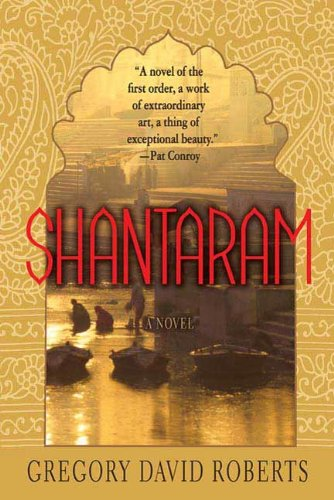
Shantaram
By Gregory David Roberts
A doorstop of a book, but it's a thrill ride. Very violent at times. Makes me want to visit Mumbai and become a bad-ass. Has elements of "The Sun Also Rises" what with all the witty ex-pats sitting around the cafe. (946 pages)
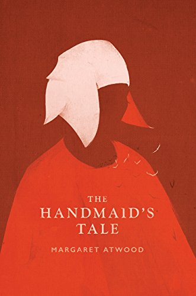
The Handmaid’s Tale
By Margaret Atwood
Rereading 30 years later to refresh my memory before reading "The Testaments" — even more chilling than it was in the Reagan years. Margaret Atwood is a genius, that's all. (325 pages)
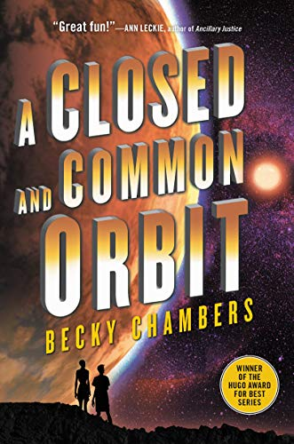
A Closed and Common Orbit
By Becky Chambers
An embodied, angsty AI and a punk-rock clone get up to some hijinks. But what about the degenerate planet that uses enslaved clone girls to recycle its electronics? Maybe we should, uh, do something about that? (365 pages)
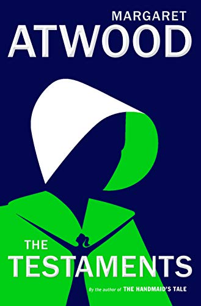
The Testaments
By Margaret Atwood
Three intertwined lives tell the story of the beginning of the end of Gilead. See, Aunt Lydia wasn't so bad after all. Margaret Atwood is a genius. (381 pages)
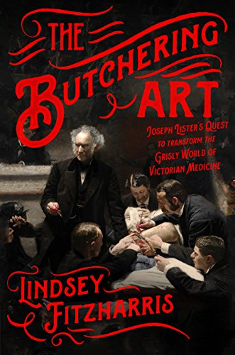
The Butchering Art: Joseph Lister's Quest to Transform the Grisly World of Victorian Medicine
By Lindsey Fitzharris
Ever wonder where Listerine got its name? You'll know after you read this. Probably best not to read this while eating lunch. Lots of pus talk, some vomit. You'll be thankful for the work Lister did, and you'll wonder how anyone ever trusted doctors. (284 pages)
The Road to Wigan Pier
By George Orwell
A British dilettante rattles on about poor people. With diversions to insult gay poets, and aspirin. Spoiler: there is no Wigan Pier. (131 pages)
How To Be An Antiracist
By Ibram X. Kendi
It's not enough to be race neutral in a society of ingrained racist institutions. To move toward equity, we need to be anti-racist. All decisions need to be filtered through that lens. It's not easy, even for the targets of racist policies. (284 pages)
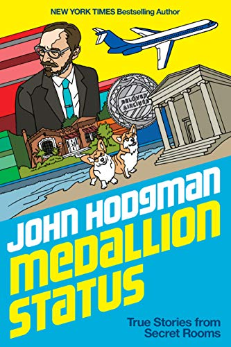
Medallion Status
By John Hodgman
The Bard of Park Slope is on a quest to maintain elite status even as his star as a TV show best pal dims. A funny rumination on middle‐age and relevance. Spoiler: very limited Maine content. (303 pages)
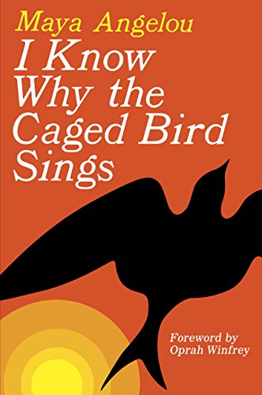
I Know Why the Caged Bird Sings
By Maya Angelou
Maya Angelou, y'all! Her autobiography of growing up in the Jim Crow South. I can't believe I haven't read this before. Just read it everyone. Maya Angelou! (304 pages)
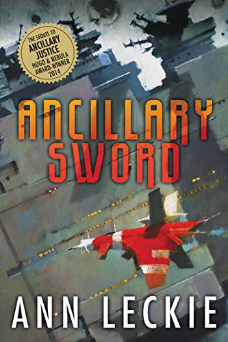
Ancillary Sword
By Anne Lecke
Second book in a series about a warship's AI that gains a body and is on a mission to fuck some things up. All set in a universe where everyone is "she" and manners are highly important. It always seems to be tea time. (400 pages)
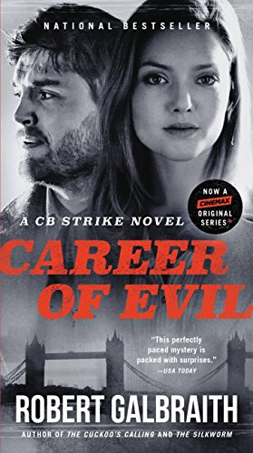
Career Of Evil
By Robert Galbraith
A grisly, violent installment in Cormoran Strike's career. Will they or won't they? Maybe Dumbledore will fix everything. Narrator: he doesn't. (609 pages)
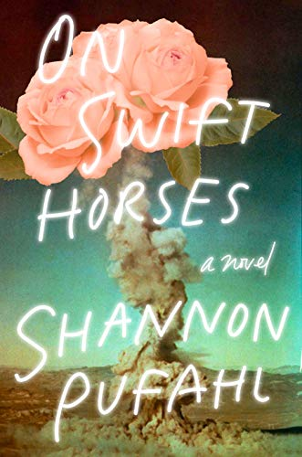
On Swift Horses
By Shannon Pufahl
Loneliness, desire, and regret in 1957 Southern California. Reminds me of Cormac McCarthy's "Border Trilogy" in style and voice. Also, basically everyone in 1950s America is gay. Some good Vegas content. (320 pages)
Little Women
By Louisa May Alcott
Marmee, Jo, Meg, Beth, and Amy find their way in a world that doesn't give them a whole lot of options. I dare you to not shed a tear or two. The amount of petting in this novel is a little disturbing. (566 pages)
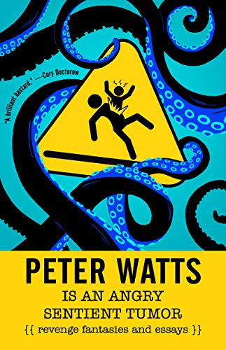
Peter Watts Is An Angry, Sentient Tumor
By Peter Watts
Essays from the very controversial (random killing of cops might have utility), to the lighlty controversial (YA literature is bad), to homages to his dead cats (Banana and Chip), Watts has a lot to say on about any topic you might think of. This is a repurposing of years of blog posts. If you want to know more about what is in the mind of the author of Blindsight and Echopraxia, you should give this collection a read. (320 pages)
The Triumph Of Christianity: How a Forbidden Religion Swept the World
By Bart Ehrman
So, how does a bedraggled crew led by a scruffy criminal launch a movement that becomes the state religion of the known world in under 400 years? And all without social media. It's a little like a virus. Even an old non-believer like me has to stand back and admire the chutzpah. (353 pages)
The Uninhabitable Earth: Life After Warming
By David Wallace-Wells
Things are bad — like, real bad. Based on the latest IPCC report, they're even worse than this book makes out. The outlook presented is so dire, it took me several months to finish the book because I just couldn't read it through. Ultimately there is some hope offered, but not much. (304 pages)
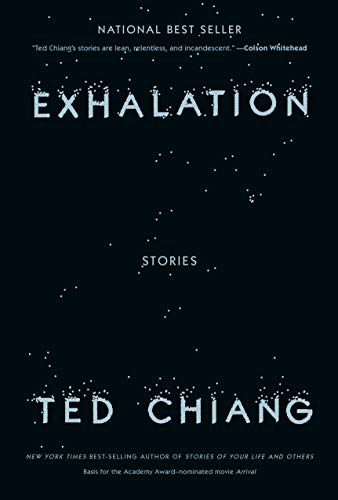
Exhalation: Stories
By Ted Chiang
A collection from a master short story teller, these stories have the same things I love about Karen Russell's stories. Each is so perfectly formed I wonder how it could possibly exist. The title story is so human, you quickly lose track of the fact the narrator is one of a race of inquisitive robots facing a very familiar existential threat. (362 pages)
Howling At The Moon: The Odyssey of a Monstrous Music Mogul in an Age of Excess
By Walter Yetnikoff & David Ritz
How does a man who is literally out of control, blasted on cocaine and vodka at all times, build a huge multi-national media empire? It's never quite clear, but it it did happen. I work at the company he ultimately created. The names drop fast and hard in this self-hagiography (albeit with some self-reflection on just what an ass he was). Return with Walter to the days when hookers and blow made the music business run. (320 pages)
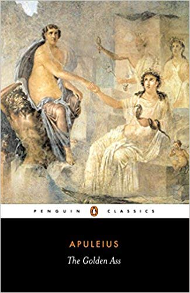
Metamorphoses (The Golden Ass)
By Apuleius
The only ancient novel written in Latin to survive, our hero Lucius accidentally turns himself into an ass. Wackiness ensues. The women are all conniving or stupid and the men are mostly beastly or stupid. The gods are real assholes. There are truly funny moments and modern-seeming situations. Those Romans sure did have a lot of sex and in a lot of different ways. (304 pages)